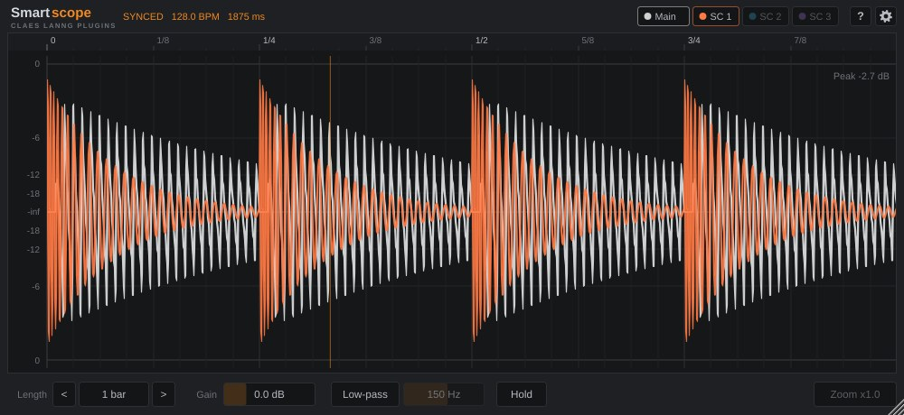

Smartscope
Version 1.1
See whether your kick and bass are in phase.
- Oscilloscope locked to your project tempo, from 1/16 to 4 bars
- Up to three sidechain layers, each in its own colour
- Zoom in to single samples, with a low-pass that shows just the low end